说明： 在您可以将应用提交到 Windows Phone/Windows Store 应用商店之前，您必须注册一个开发人员中心账户，要了解详细注册过程，请参见Windows Phone开发人员中心注册、Windows Store开发人员中心注册。
一、准备好您的应用程序包文件
您的xap是指您将在Windows Phone开发人员中心上载的文件，其中包含可执行文件以及运行该应用所需的所有资源。
对于Windows Store开发人员中心，需要上传的文件格式是appxupload，其中包含appx文件和appxsym，其中appx包含了应用程序运行所需的所有资源，appxsym是应用程序公共符号压缩文件。
Apple App Store需要上传的文件格式是ipa，Google Play需要上传的文件格式是apk。
二、创建应用信息
应用别名：这是应用在开发人员中心中显示的方式，但不是应用在应用商店中显示的方式。创建您的应用别名时，请谨记以下事项：您输入的别名对您的帐户必须是唯一的、您的应用别名长度最多为 100 个字符。
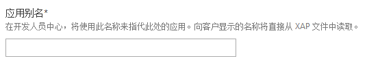
类别：在选择类别和子类别时，请清楚地定义应用的标识，这样可帮助用户更为轻松地在应用商店中找到您的应用。如果您不确定要使用哪个类别或者子类别，请选择您认为用户在查找与您类似的应用时最有可能搜索的类别或者子类别。如果您在提交之后感觉应用应属于其他类别，您不必担心。您可以随时更改。请注意，只有部分类别会有子类别。如果您选择了一个带有子类别的类别，则必须指定子类别，并且您只能使用属于您所选类别的子类别，然后才能提交该应用。请参见Windows Phone应用的类别、Windows Store应用的类别。
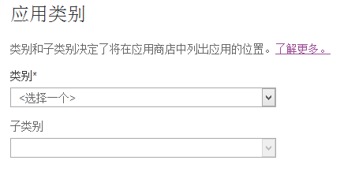
在Google Play上，同样需要在提交应用时为其选择对应的类别，Google Play上分为应用程序和游戏两种大类，每种大类下面又分了许多小的类别，详细分类情况，请参见Google Play上的应用类别。
在Apple App Store上，您可以从应用程序分类表中为应用程序选择一个主要类别，同时也可以在相同的表中选择一个次要类别（可选）。如果您将“游戏”选择为主要类别或者次要类别，则您可以同时在“游戏”的子选项中选择两个子类别。
定价：您可以在认证之前、之中或之后随时在开发人员中心中更改应用的价格。如果您的应用是免费的，请在价格列表中选择 $0.00。如果您正在销售付费应用，可以在定义价格和市场选择中了解有关在逐个国家/地区基础上更改基价和设置自定义价格的详细信息。有关Windows Store应用程序的定价相关信息，请参见赚钱规划。
在Google Play中，可以在开发者控制台上设置应用程序的价格以及内购价格，免费应用可以供任何人下载，但是付费应用只能供已注册付款手段的人使用。
在Apple App Store中，有一个预先设定好的价格矩阵，开发者只需要选择其中的一项，app store就会自动为不同货币进行换算，同时开发者可以选择该应用是否支持为教育机构打折。
试用：如果您计划提供试用版本的应用，则选择提供此应用的免费试用复选框。如果您想要将试用应用放置在商店 上，您必须使用试用 API 以实现试用版本的不同或有限功能。要了解有关试用应用的详细信息，请参见创建 Windows Phone 的试用应用、创建Windows Store的试用应用。
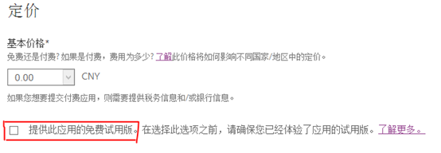
市场分布：设置您的应用的价格后，您需要确定应用的分布模式并选择要在其中进行销售的市场。您拥有以下分布选择：
● 分布到所有基层市场：这是应用分布的默认形式。此选择旨在将应用发布到 Windows Phone商店当前支持的所有国家或地区。
● 分布到除中国之外的所有市场：不允许出现在您的应用所适用的任何国家/地区具有冒犯性的内容。根据当地法律或文化规范，一些内容可能会在某些国家/地区视为冒犯性内容。中国对于应用内容有一些特殊限制。有关更多信息，请参见 Windows Phone 内容策略的 3.10 部分。
● 继续分布到当前市场：如果您打算自定义市场价格或正在更新您的应用并希望保留应用的现有市场设置，则选择此选项。
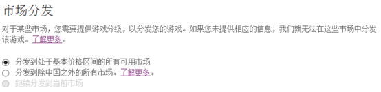
记住，您必须先在注册期间或在开发人员中心面板的帐户部分提交您的付款和税收信息，然后才能对应用进行收费。在您做出应用详细信息和价格的选择后，您可以保存并继续步骤，或继续在更多选项区域内的应用信息中进行修改。
有关Windows Store应用程序的市场分布，与Windows Phone应用程序相似，请参见：选择Windows Store应用的市场。
对于Google Play，同样可以选择应用程序发布的地区（并非所有列出的国家/地区都有运行Android系统的设备），但是只有部分列出的国家/地区的用户可以使用付费应用。详细信息，请查看发布应用所支持的国家/地区。
更多选项：在更多选项列表中，您可以自定义最适合您的应用的分布和发布参数。
分布渠道：您希望您的应用去往何方 - 直接进入商店，还是进入Beta测试？如果您选择Beta测试，请在对话框中告诉我们将由谁测试您的应用（仅限Beta测试人员的电子邮件地址）。您的测试人员将需要Microsoft帐户（之前被称为Windows Live帐户）来测试您的应用。若要了解详细信息，请参见对您的应用和应用内产品进行 Beta 测试。
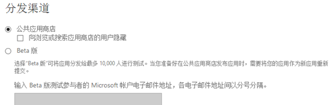
发布：您的应用将如何上线 - 自动还是手动？如果您希望您的应用尽快位于商店中，则选择认证后自动提交。自动发布到公共商店后，预计您可在成功提交后的 5 至 7 个工作日后看到您的应用。如果您想要自行控制发布的时间，则使用认证后随时手动提交。如果您没有在更多选项列表中做出调整，则公共商店和认证后自动提交将被设置为用于应用的默认的分布和发布选择。
推送通知证书：如果您在商店中已有应用并且您刚提交了更新，那么使用经过身份验证的推送通知是告知当前用户有关您所做改进的极佳方式。要了解详细信息，请参见 Windows Phone 的推送通知、Windows Store应用的推送通知。
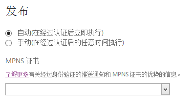
游戏分级证书：对于在游戏类别中发布的应用，您可以上载从分级机构获取的证书。某些国家或地区要求提供由机构颁发的特定版本的证书。在要求游戏分级证书的国家或地区中，系统不会自动提供游戏。了解有关游戏分级的详细信息，Windows Store应用的分级信息请参见这里。
保存更改
当您填写完应用信息并对更改感到满意后，请单击保存。如果保存操作已成功完成，您将被重定向到提交应用或更新应用页面，从中您可以看到应用信息旁边的复选框。现在您可以继续进行下一步：上载并描述您的 XAP。
对于Google Play，应用程序发布时也可以选择先进行部分用户的Alpha和Beta测试，在Google Play控制台上有对应选项可以选择。应用程序分级可以分为：所有人、心智成熟度低、心智成熟度中、心智成熟度高，一共四个等级，用户可以在Android设备上面设置心智等级，Google Play会显示对应级别的应用。Google Play的应用程序包大小限制为50MB，如果超出这个体积，最好使用应用程序拓展文件，在应用程序第一次启动的时候再下载这些数据。
对于Apple App Store，流程与上述类似，如果提交的应用程序体积大于50M，则不会通过3G网络下载，只有在WIFI条件下才会下载安装。
三、上载并描述您的应用程序包
添加或更新您的应用程序
XAP是用来在Windows Phone开发人员中心上提交应用的程序包。它包含可执行文件以及运行应用所需的所有其他资源。当您在Visual Studio中构建项目时，将自动创建XAP；默认情况下它存储在项目的Bin文件夹中。在“上载XAP”对话框中，确保您选择了XAP的发布版本，以及输入了版本号。应用版本号是必需的，而且不会从可执行文件中提取。如果您正在将更新上载到您的应用，请相应地调整 XAP 版本号。
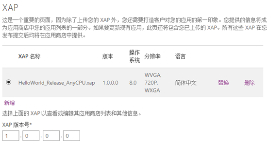
成功上载 XAP 后，开发人员中心 将在“从文件检测到的 XAP 详细信息”下拉菜单中列出关键详细信息 - 文件大小、操作系统和语言。在提交 XAP 之前，您可以使用已检测到的 XAP 详细信息列表验证 XAP 的规范。注意：XAP文件的大小限制为1GB。
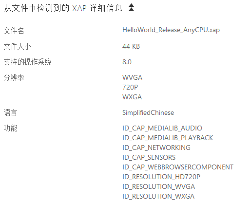
对于Windows Store应用程序，创建的是appx或者appxupload应用程序包，我们可以在开发者中心的“程序包”页面上传这些文件，如果上传了appupload文件，则当客户运行应用程序遇到故障（崩溃、无响应事件或者JavaScript异常）时，应用商店可以创建一个cab文件，可以使用此cab文件在你的应用中调试编程错误，有关相信信息请参阅查看应用质量。注意，每个程序包最大限制为2BG。块映射散列算法使用SHA2-256算法。
要完成应用的提交或对现有应用进行更新，请遵循以下步骤：
- 转到应用的“生命周期”页面。
- 单击“完成”或“更新应用”。
- 在提交应用或更新应用页面上，单击应用信息或上载并描述您的 XAP。
- 进行更改，然后单击保存。您将返回到提交应用或更新应用页面。
- 单击检查和提交来复查您的提交。
- 在检查提交页面上，检查以确保您所做的所有更改都正确。
- 如果所有更改都正确，则单击提交按钮来完成您的提交。否则，单击返回并编辑按钮，返回到上一页并进行更多更改。
存储列表信息
语言、说明和关键字
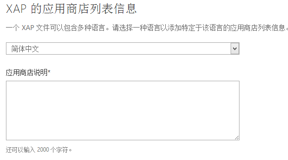
此外，您还可以输入最多五个关键字或短语来帮助用户使用商店搜索功能查找应用。
插图和分辨率
Windows Phone开发人员中心允许您上载三种插图，这些插图将显示在商店中。您可以使用“全部上载”功能一次性选择所有图像，然后我们将为您放置这些图像， 所有插图文件必须以PNG格式上传。在Windows Phone8中，您的应用可支持多种分辨率。
“应用磁贴图标”将和应用标题一起在 商店 内和手机上显示。您需要提供以下尺寸的图标：300 像素 X 300 像素。
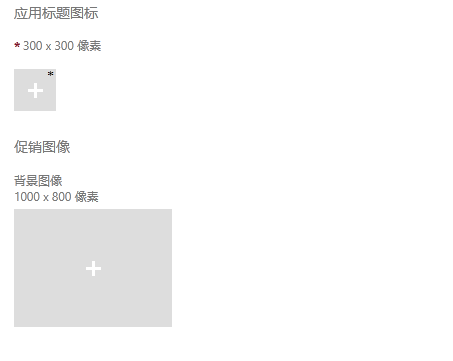
“背景图像”是可选的，如果商店中介绍了您的应用，您可以使用它。如果使用背景图像，您需要提供具有以下尺寸的背景图像：1,000像素X 800像素。
使用屏幕快照在商店中展示您的应用的外观。您必须提供至少一张屏幕快照并且每种语言/分辨率最多提供八张屏幕快照。
下面是可用的屏幕快照分辨率：
WVGA：480*800，WXGA：768*1280，HD720p：720*1280。
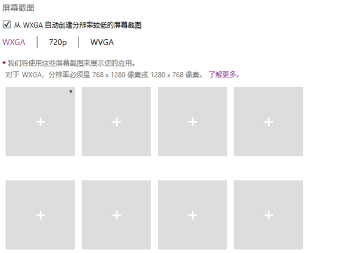
Windows Store应用提交时需要必须提供以下四种图像：
应用程序徽标：50*50。徽标：150*150。小徽标：30*30。初始屏幕：620*300。
对于介绍Windows Store应用程序，需要至少一个之多八个屏幕截图，截图的图像必须为1366*768分辨率或者更高，且文件大小不超过2MB，首个屏幕截图必须是代表应用的所选图形，其他所有图像则必须是直接在应用中截取的屏幕截图。促销图像不是必须提供的，但是建议您提供，其分辨率要求为414*180，如果有可能，还建议提供几张414*469、558*756和846*468像素的图像。Microsoft Visual Studio提供了一个工具以帮助你捕获屏幕截图。详细介绍，请参见选择应用图像。
对于Google Play，需要至少两张图片来展示您的应用，您可以为每种手机、7寸平板、10寸平板各上传至多8张图片，最小边分辨率不得低于320像素，最大边分辨率不得高于3840像素，且最大边分辨率不得高于最小边分辨率的2倍，图片可以使用24bit PNG或者JPG格式（无Alpha通道）。在Google Play上，需要上传高分辨率的图标文件，要求512*512像素、32bit PNG格式，不超过1024KB，还有可选的特征图像，1024w*512h、24bit PNG或者JPG格式，建议每边留出50像素安全空间，将重要内容放入924*400范围内，还有可供促销使用的促销图像，180w*120h、24bit PNG或者JPG图像。
对于Apple Store，大图标的尺寸是512*512，格式要求是jpg或者tiff（不接受png图片），截图的尺寸应该是垂直图片最小320*460、最大320*480，水平图片最小480*300、最大480*320，图片格式为jpg或者tiff（不接受png图片）。
更多选项
以下为一些附加选项，可帮助您进一步自定义您的应用提交。
XAP选项
请注意更多XAP选项列表下的技术例外复选框和浏览链接。如果您的应用中存在技术例外，并且您具有所需的技术例外证书，请打开更多XAP选项，选择技术例外复选框，然后单击浏览链接，以在本地机器上选择要上载的证书文件。要了解有关技术例外的详细信息，请参见 Windows Phone 技术认证要求。
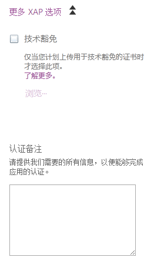
版权和联系信息选项
请注意用于URL的部分，这些URL可以允许用户连接到与您的应用相关联的法律条款、版权或商标，以便用户查看。该字段是可选的。此外，您可以提供一个电子邮件地址，方便用户联系您以向您提问或提供关于应用的反馈。该字段也是可选的。
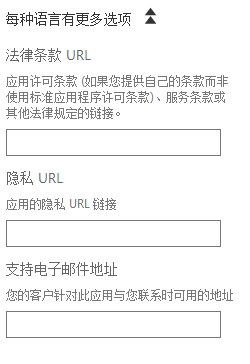
四、保存您的应用
在您上载并描述完 XAP，并且对更改满意之后，请单击“保存”。如果保存成功，则您将返回到提交应用或更新应用页面。单击检查和提交按钮。在检查提交页面上，检查以确保您所做的所有更改都正确。要完成您的提交，请单击提交。
到目前为止，您已经全部完成！您的应用或更新已经正式提交到开发人员中心中。我们期待对它进行检查。我们将在 5 到 7 个工作日内向您发送电子邮件以告诉您提交状态。